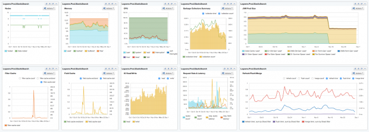

I’ve been lamenting the demise of the Unix philosophy: tools should do one thing, and do it well. The ability to connect many small tools is better than having a single tool that does everything poorly.
That philosophy was great, but hasn’t survived into the Web age. Unfortunately, nothing better has come along to replace it. Instead, we have “convergence”: a lot of tools converging on doing all the same things poorly.
The poster child for this blight is Evernote. I started using Evernote because it did an excellent job of solving one problem. I’d take notes at a conference or a meeting, or add someone to my phone list, and have to distribute those files by hand from my laptop to my desktop, to my tablets, to my phone, and to any and all other machines that I might use.
But as time has progressed, Evernote has added many other features. Some I meetinght have a use for, but they’re implemented poorly; others I’d rather not have, thank you. I’ve tried sharing Evernote notes with other users: they did a good job of convincing me not to use them. Photos in documents? I really don’t care. When I’m taking notes at a conference, the last thing I’m thinking about is selfies with the speakers. Discussions? No, please no. There are TOO MANY poorly implemented chat services out there. We can discuss my shared note in email. Though, given that it’s a note, not a document, I probably don’t want to share anyway. If I wanted a document, even a simple one, I’d use a tool that was really good at preparing documents. Taking notes and writing aren’t the same, even though they may seem similar. Nor do I want to save my email in Evernote; I’ve never seen, and never expect to see, an email client that didn’t do a perfectly fine job of saving email. Clippings? Maybe. I’ve never particularly wanted to do that; Pinboard, which has stuck to the “do one thing well” philosophy, does a better job of saving links. Read more...
Editor’s note: This is the first post in a two-part series about the evolution of data processing, with a focus on streaming systems, unbounded data sets, and the future of big data. See part two.
Streaming data processing is a big deal in big data these days, and for good reasons. Amongst them:
Businesses crave ever more timely data, and switching to streaming is a good way to achieve lower latency.
The massive, unbounded data sets that are increasingly common in modern business are more easily tamed using a system designed for such never-ending volumes of data.
Processing data as they arrive spreads workloads out more evenly over time, yielding more consistent and predictable consumption of resources.
Despite this business-driven surge of interest in streaming, the majority of streaming systems in existence remain relatively immature compared to their batch brethren, which has resulted in a lot of exciting, active development in the space recently.
As someone who’s worked on massive-scale streaming systems at Google for the last five+ years (MillWheel, Cloud Dataflow), I’m delighted by this streaming zeitgeist, to say the least. I’m also interested in making sure that folks understand everything that streaming systems are capable of and how they are best put to use, particularly given the semantic gap that remains between most existing batch and streaming systems. To that end, the fine folks at O’Reilly have invited me to contribute a written rendition of my Say Goodbye to Batch talk from Strata + Hadoop World London 2015. Since I have quite a bit to cover, I’ll be splitting this across two separate posts:
Streaming 101: This first post will cover some basic background information and clarify some terminology before diving into details about time domains and a high-level overview of common approaches to data processing, both batch and streaming.
The Dataflow Model: The second post will consist primarily of a whirlwind tour of the unified batch + streaming model used by Cloud Dataflow, facilitated by a concrete example applied across a diverse set of use cases. After that, I’ll conclude with a brief semantic comparison of existing batch and streaming systems.
So, long-winded introductions out of the way, let’s get nerdy. Read more...
Elasticsearch is booming. Together with Logstash, a tool for collecting and processing logs, and Kibana, a tool for searching and visualizing data in Elasticsearch (aka, the “ELK” stack), adoption of Elasticsearch continues to grow by leaps and bounds. When it comes to actually using Elasticsearch, there are tons of metrics generated. Instead of taking on the formidable task of tackling all-things-metrics in one blog post, I’ll take a look at 10 Elasticsearch metrics to watch. This should be helpful to anyone new to Elasticsearch, and also to experienced users who want a quick start into performance monitoring of Elasticsearch.
Most of the charts in this piece group metrics either by displaying multiple metrics in one chart, or by organizing them into dashboards. This is done to provide context for each of the metrics we’re exploring.
To start, here’s a dashboard view of the 10 Elasticsearch metrics we’re going to discuss:

10 Elasticsearch metrics in one compact SPM dashboard. This dashboard image, and all images in this post, are from Sematext’s SPM Performance Monitoring tool.
Now, let’s dig into each of the 10 metrics one by one and see how to interpret them.
There is no doubt that we are moving from a single cryptocurrency focus (bitcoin) to a variety of cryptocurrency-based applications built on top of the blockchain.
This article examines the impact of the blockchain on developers, the segmentation of blockchain applications, and the network effects factors affecting bitcoin and blockchains.
The blockchain is the new database — get ready to rewrite everything
The technology concept behind the blockchain is similar to that of a database, except that the way you interact with that database is different.
For developers, the blockchain concept represents a paradigm shift in how software engineers will write software applications in the future, and it is one of the key concepts that needs to be well understood. We need to really understand five key concepts, and how they interrelate to one another in the context of this new computing paradigm that is unravelling in front of us: the blockchain, decentralized consensus, trusted computing, smart contracts, and proof of work/stake. This computing paradigm is important because it is a catalyst for the creation of decentralized applications, a next-step evolution from distributed computing architectural constructs. Read more...
Developers today are building a new class of applications. These applications no longer fit on a single server, but instead run across a fleet of servers in a data center. Examples include analytics frameworks like Apache Hadoop and Apache Spark, message brokers like Apache Kafka, key-value stores like Apache Cassandra, as well as customer-facing applications such as those run by Twitter and Netflix.
These new applications are more than applications, they are distributed systems. Just as it became commonplace for developers to build multithreaded applications for single machines, it’s now becoming commonplace for developers to build distributed systems for data centers.
But it’s difficult for developers to build distributed systems, and it’s difficult for operators to run distributed systems. Why? Because we expose the wrong level of abstraction to both developers and operators: machines. Read more...
Over the past decade, SSD drives (popularly known as Flash) have radically changed computing at both the consumer level — where USB sticks have effectively replaced CDs for transporting files — and the server level, where it offers a price/performance ratio radically different from both RAM and disk drives. But databases have just started to catch up during the past few years. Most still depend on internal data structures and storage management fine-tuned for spinning disks.
Citing price and performance, one author advised a wide range of database vendors to move to Flash. Certainly, a database administrator can speed up old databases just by swapping out disk drives and inserting Flash, but doing so captures just a sliver of the potential performance improvement promised by Flash. For this article, I asked several database experts — including representatives of Aerospike, Cassandra, FoundationDB, RethinkDB, and Tokutek — how Flash changes the design of storage engines for databases. The various ways these companies have responded to its promise in their database designs are instructive to readers designing applications and looking for the best storage solutions.

 I’ve been lamenting the demise of the Unix philosophy: tools should do one thing, and do it well. The ability to connect many small tools is better than having a single tool that does everything poorly.
I’ve been lamenting the demise of the Unix philosophy: tools should do one thing, and do it well. The ability to connect many small tools is better than having a single tool that does everything poorly.